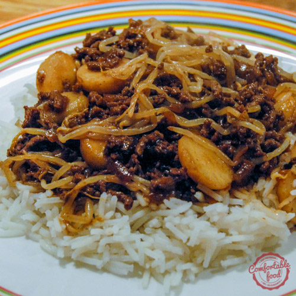

For Grandma Mary Lou, who fed and raised three wild girls who can now pass this recipe along to their growing kids.
P.S. she is still alive — greyscale is just more aesthetically pleasing.
Roll beef heavily in flour and then brown them in butter in a large stock pot. Add 1 cup of water, Worcester sauce and molasses to the meat and cook for 30 min. Then, add the rest of the ingredients. Simmer for several hours. After cooking for 2-3 hours, take one cup of broth from the pot and add cornstarch, then slowly add back to the pot to thicken. Serve over white rice and garnish with rice noodles. Enjoy!
